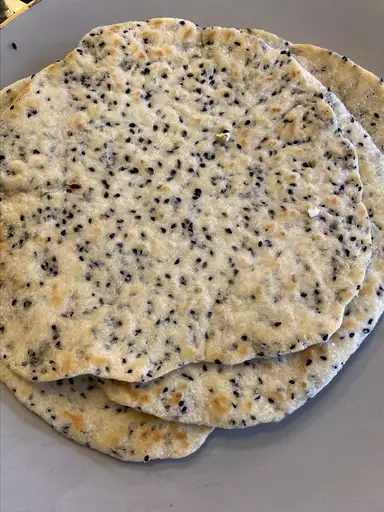

Indian Chapati Bread

Description
I worked with some Indians and there love for this food makes me feel like I'm missing out on something huge
I love the way this food is loved. it is native to the Indians.
Ingredients
- 1 cup whole wheat flour
- 1 cup all-purpose flour
- 1 teaspoon salt
- ¾ cup hot water or as needed
- 2 tablespoons olive oil
Direction:
- Step 1: Mix flours and salt in a large bowl. Use a wooden spoon to stir in water and olive oil. Mix until a soft, elastic dough forms and add more water, if needed. Knead dough on a lightly floured surface until smooth.
- Step 2: Divide dough into 10 equal portions, or less if you want larger chapatis. Roll each piece into a ball and let rest for a few minutes.
- Step 3: Heat a lightly greased skillet over medium heat.
- Step 4: Use a rolling pin to roll dough balls out on a lightly floured surface until very thin, like a tortilla.
- Step 5: When the skillet starts to smoke, place a chapati in it. Cook until bottom has brown spots, about 30 seconds, then flip and cook 30 seconds more. Repeat to cook remaining chapatis.